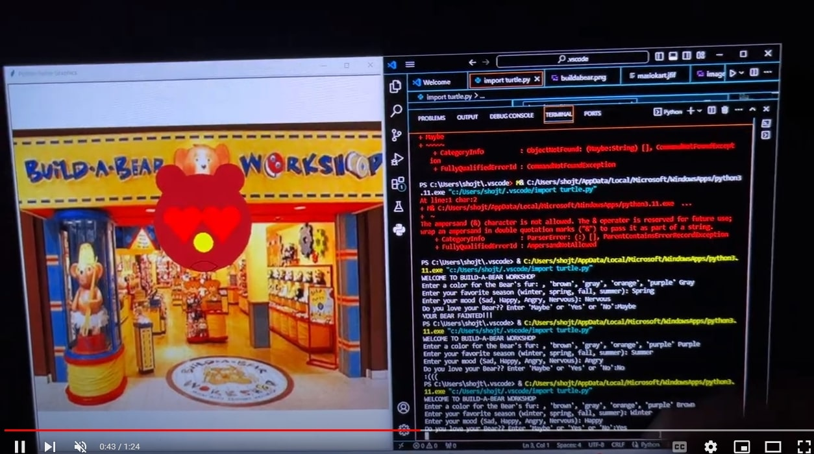
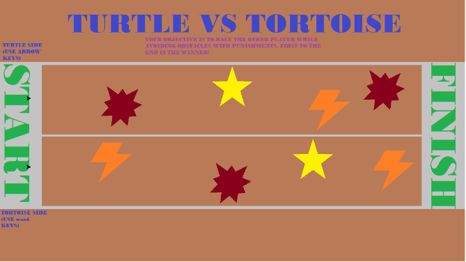

Home
Portfolio
About Me
This is my Portfolio Page!

Build-A-Bear

This is our project. We did a "Build-A-Bear" concept where the user can have inputs, and once they anwer the questions, it customizes and makes their own bear. The inputs are ones that made the fur have color, and gave the nose a color based off the bear's emotion. When the bear is made, a prompt for an input will come up asking, "Do you love your bear?" and, depending on the user's input, the bear will respond with some kind of emotion on its face. If the user answers yes, the bear will be happy and heart yes will appear on the bear along with confetti around it. If the user replies no, then the bear will shed a tear and have a sad look on its face. If the user replies maybe, then the bear will have swirly eyes showing that they are dizzy, and it will pass out. This is essentially what we worked on.
Turtle vs Tortoise

This is our 2nd project for 1.2.5. We created a Turtle vs Tortoise concept that focused on collisions and the key assignments for moving around. It is supposed to be a race between a turtle and a tortoise, and there are certain obstacles that can stun or stall you if you run into them. That is the collision, and you are supposed to use either WASD or the arrow keys to move around the obstacles and get to the finish line. We also assigned a turtle image and tortoise image to the 2 turtles to emmulate the experience of racing with a tortoise or a turtle. Whichever player wins gets a "Win screen" once they cross the finish line. For example, if the turtle wins, another screen will pop up saying "Turtle wins!" Congratulations! Maybe next time Tortoise..." and vice versa for the Tortoise.
Scratch Project: Penguin Avalanche

For the Scratch Project, we created a game called Penguin Avalanche. You would use your cursor to control the penguin that throws fish to destroy snowballs for points. You get 3 lives, and if you get hit by the snowballs, you lose a life. There are also polar bears that throw sharks at you that can also take away lives if you get hit. If you manage to kill the polar bear though, you get more points. This game emphasized events, counters, inputs, scores, and costume changes, including a starting and game over screen. We also implemented pop sounds when you get hit, background music, and a game over noise.
Modified bits in pictures.

3.1.5 Robot Factory

The Robotic Factory model seeks out to demonstrate an autonomous factory where the suppliers are not as predictable as the automated factory. Robots carry supplies and drop them off at each station. If they get to a station and there is already supply there, they will pick up the supply and drop it off at the next station. When the robots run low on energy, they will stop whatever they’re doing and return to the robot rooms to recharge. Once they have returned to sustainable energy levels, they will go back to work. There are 2 of each stations (cutters, stitchers, and finishers). Finishers can either be lux or standard, where the lux variant takes 7 ticks to finish and the standard takes 4 ticks. There is only one loading dock, storage, and robot room. Supply is delivered to the loading dock in random amounts, storage is where finished products are delivered, and the robot room is where the robots recharge.
Using netlogo do remix of illusions.